- 가맹비 면제
- 신규 가맹점 3개월 면 지원
- 오픈 후 1년 마케팅 지원
한정 프로모션 · 업종 변경은 메인 간판 지원 · 자세한 조건은 상담 때 안내해 드립니다
물과 소금이 만나
한 그릇의 맛이 됩니다
수유리우동집의 법인 이름은 '물과소금'입니다. 본사는 물처럼 든든한 기반이 되고, 가맹점은 소금처럼 현장에서 브랜드의 맛을 더합니다.
역할은 다르지만 함께할 때 하나의 맛이 됩니다. 본사와 가맹점이 서로의 동반자로 오래 함께 성장하는 것, 그것이 수유리우동집의 목표입니다.
실제 매장 연매출
2025년 연매출 · 창업 사이트 공개 자료 기준 · 매장마다 다를 수 있습니다
평균 매장의
한 달 수익 구조
13평 평균 매장 기준, 매출에서 비용을 빼고 남는 돈을 그대로 보여 드립니다.
| 항목 | 금액 | 비율 |
|---|---|---|
| 월매출 | 2,650만 원 | 100% |
| 원재료비 | 1,007만 원 | 38% |
| 인건비 | 530만 원 | 20% |
| 임대료 | 318만 원 | 12% |
| 기타 | 265만 원 | 10% |
| 월 수익 | 530만 원 | 20% |
창업 사이트 공개 자료(평균 매장, 13평) 기준 · 실제 수익은 운영 방식과 상권에 따라 다릅니다
한 매장이 잘되면
두 번째 매장을 냅니다
수유리우동집에는 여러 매장을 함께 운영하는 점주가 많습니다.
- 노원 · 상계 · 은행사거리 · 창동4개 매장
- 광주 동천 · 서구청 · 일곡3개 매장
- 원흥역 · 죽전보정2개 매장
- 봉선 · 풍암2개 매장
- 녹번역 · 연신내역2개 매장

본사가 직접 매장을 운영합니다
여러 직영점을 본사가 직접 운영하며, 매달 쌓이는 데이터로 메뉴와 운영 방식을 먼저 검증합니다.
상권을 타지 않는 한 끼
학생·직장인·가족·1인 가구까지 부담 없이 찾는 면 요리라, 작은 공간에서도 운영 효율이 높고 경기에 덜 흔들립니다.
공간이 편해야 식사도 즐겁습니다
언제 들어와도 부담 없는 아늑한 매장으로 꾸며 드립니다.
매출이 들어오는 길은 네 가지
- 홀
- 포장
- 배달
- 단체 주문
한 곳에 기대지 않아 계절·분기별 매출 걱정을 줄입니다.
편하지만,
정성은 그대로
액상 육수 대신 원물을 로스팅한 육수팩. 매장에서 우려낸 맛을 편하게 냅니다.
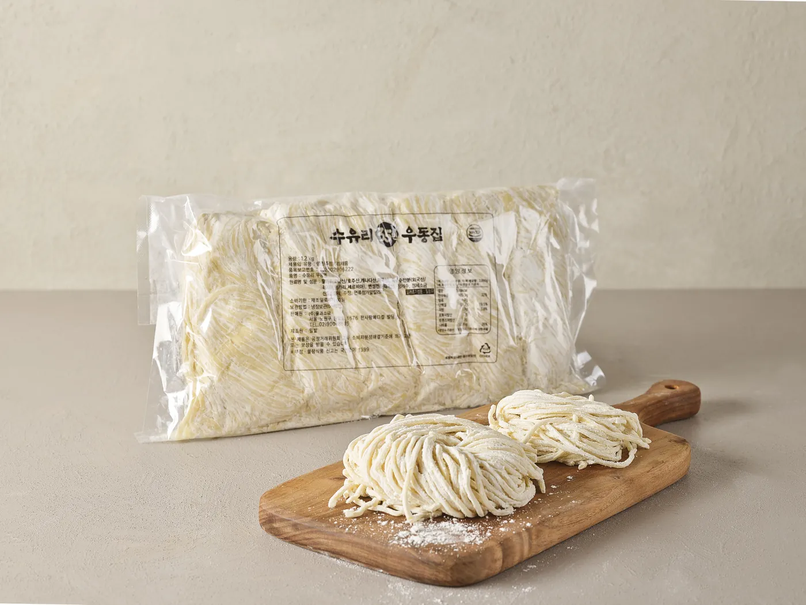

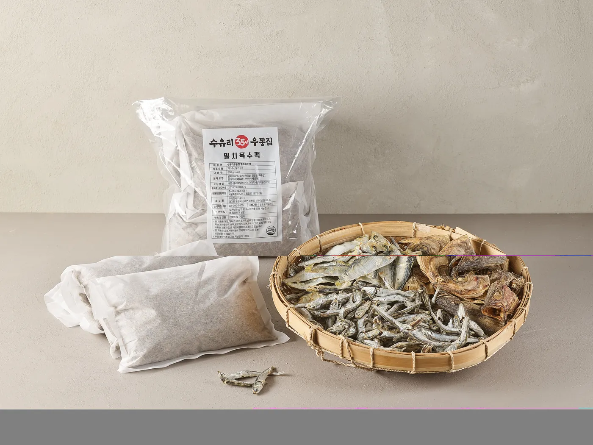

점심부터 저녁까지,
메뉴가 손님을 부릅니다
우동·국수·김밥·돈까스·덮밥까지 한 곳에서. 손님 폭이 넓어 시간대마다 찾는 사람이 다릅니다.
손님이 먼저
알아봅니다
배달 앱과 지도 앱에 손님들이 직접 남긴 리뷰입니다. 옆으로 넘겨 보세요.
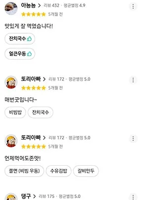
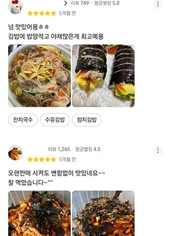
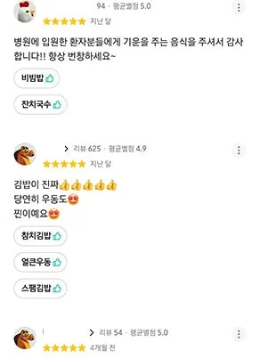
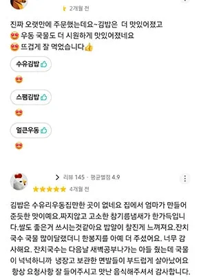
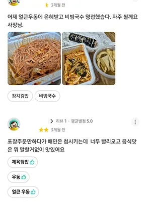
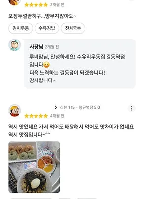
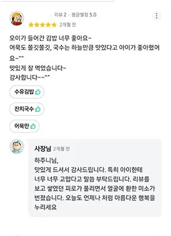
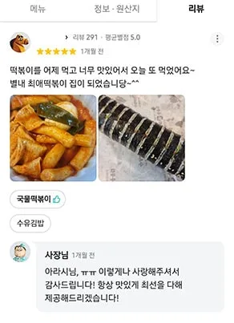
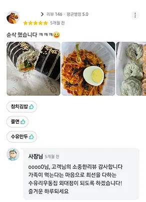
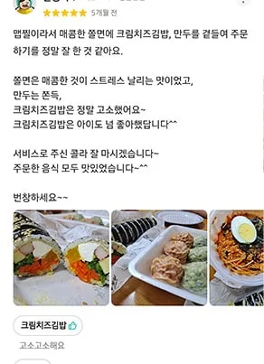
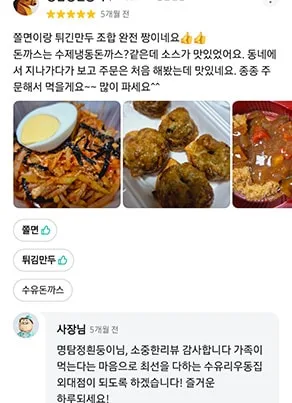
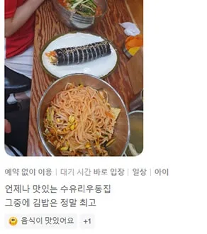
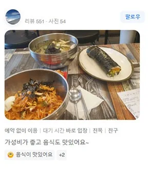
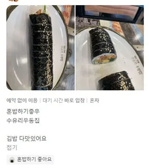
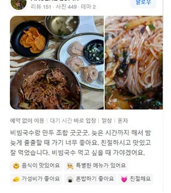
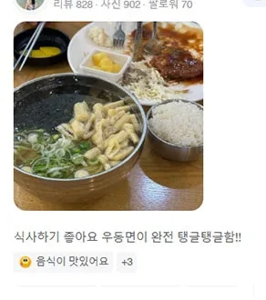
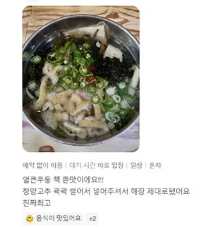
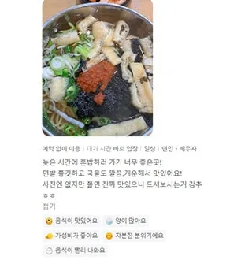
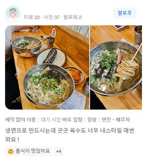
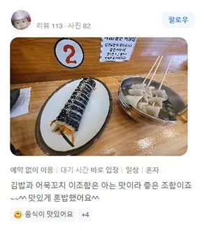
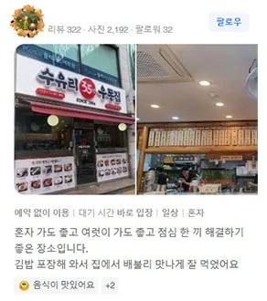
처음 해도 손이
빨리 붙습니다
- 조리 5분 이내재료가 원팩으로 와서 썰고 다듬는 일이 줄어듭니다.
- 김밥 재료 전처리뛰어난 품질의 원팩 제품으로 점주님의 손을 덜어 드립니다.
- 멸치 육수팩매일 매장에서 끓이는 육수를 일정한 맛으로, 편하게.
- 키오스크 무인 결제주문·결제를 기계가 맡아 적은 인원으로 운영합니다.
가맹본부 설립 이후
가맹점 분쟁 0건
점주님의 목소리에 귀 기울이고, 함께 걷는 상생이 있었기에 가능했습니다.
- 디지털 소통 앱수유리우동집 전용 앱으로 실시간 질문·답변, 매뉴얼 다운로드
- 매월 11일 상생데이매달 가맹점과 혜택을 나누는 날
- 전담 슈퍼바이저현장을 직접 찾아 1:1로 문제를 함께 해결
- 즉각 지원간판·메뉴판 등 현장에 필요한 지원과 시설 보수를 빠르게
- 오픈 지원오픈 전후 전담 슈퍼바이저가 영업 준비를 함께
- 마케팅 지원블로그·체험단·영수증 리뷰 등 온·오프라인 홍보
교육은 10일,
본사와 직영점에서

본사 교육 5일
실제 매장과 똑같이 꾸민 본사 교육장에서 조리와 운영을 실습합니다.
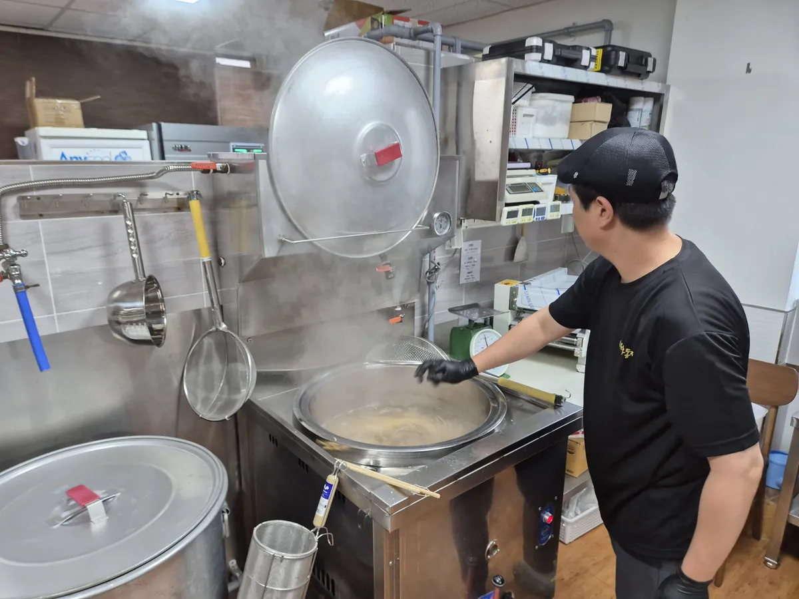
직영점 교육 5일
실제 손님이 오는 직영점에서 현장 실습을 하고 오픈합니다.
"창업하길 잘했어요"
서울 단골에서 부산 점주로. 화명역점 하재호·노정림 점주님의 이야기입니다.
창업 비용
13평 매장, 2025년 기준입니다.
업종 변경은 3,200만 원~ (메인 간판 지원)
| 구분 | 금액 |
|---|---|
| 가맹비 | 500만 원 |
| 교육비 | 500만 원 |
| 보증금 | 0원 |
| 설비·광고물 | 500만 원~ |
| 포스 | 0원 |
| 주방·홀 집기 | 2,500만 원~ |
| 인테리어 | 실측 후 안내 |
| 합계 | 3,500만 원~ |
상담부터 오픈까지 8단계
- 가맹 상담예산·희망 지역·운영 방식을 정리합니다.
- 상권 분석본사와 함께 후보지를 보고 매장 위치를 정합니다.
- 가맹 계약계약서를 작성하고 전담 슈퍼바이저가 배정됩니다.
- 인테리어 시공매장 콘셉트에 맞춰 시공합니다.
- 점주·직원 교육본사 교육장 5일 + 직영점 5일.
- 집기·설비 세팅주방 설비와 홀 집기를 설치합니다.
- 식자재 입고·최종 점검첫 재료를 받고 오픈 전 모든 상황을 점검합니다.
- 그랜드 오픈지역 홍보와 함께 본사가 오픈을 같이 진행합니다.
가까운 수유리우동집에서
먼저 맛보세요
전국 121개 매장. 상담 전에 직접 드셔 보시길 권합니다.
수제우동의 100년을 꿈꾸며
왜 수유리우동집인가,
한눈에 보기
| 가맹 계약 전 확인할 것 | 수유리우동집 |
|---|---|
| 본사가 직접 매장을 운영하나요? | 다수 직영점 운영 |
| 한 점주가 여러 매장을 하나요? | 노원·상계 등 다점포 점주 다수 |
| 핵심 재료를 본사가 만드나요? | 자사 생면 공장 · 멸치 육수팩 |
| 상권을 함께 봐 주나요? | 상담 단계부터 상권·입지 분석 |
| 교육은 충분한가요? | 본사 5일 + 직영점 5일 |
| 오픈 후에도 챙기나요? | 전담 슈퍼바이저 · 매월 상생데이 · 소통 앱 |
| 본사와 다툼은 없었나요? | 가맹점 분쟁 0건 |
| 지금 시작하면 혜택이 있나요? | 최대 1,500만 원 지원 |
카카오톡 채팅방에서 희망 지역과 예산을 알려 주시면 담당자가 바로 답변드립니다.